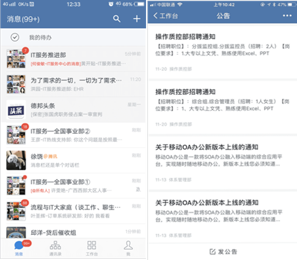
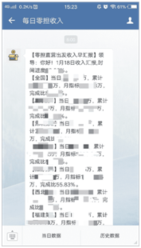

[点评] “移动数字化”对于像德邦快递这样拥有大量一线员工的价值在于，能快速将一线的员工和公司连接起来，并提供最智能的工具，保证沟通的便捷、安全和质量。
 物流业
物流业
背景介绍
/ 德邦是国家“AAAAA”级物流企业，创始于1996年。是覆盖快递、快运、整车、仓储与供应链等多元业务的综合性物流供应商。
所属行业 / 物流
所属区域 / 上海
企业规模 / 14万员工

德邦科技总裁钟智龙表示：为了解决IM信息安全问题，德邦快递通过重重技术评估，最终选择了企业微信。通过企业微信与微信互通功能，德邦快递可以让企业员工通过企业微信轻松添加客户、上下游供应链的微信，并进行实名认证，给客户提供专业的服务。同时，物流信息还会及时同步在企业微信中，真正做到每一件快递都安全在线、有始有终。
德邦是国家“AAAAA”级物流企业，创始于1996年。是覆盖快递、快运、整车、仓储与供应链等多元业务的综合性物流供应商。2018年1月16日，德邦物流在上海证券交易所主板上市交易。坚持自营门店与事业合伙人相结合的网络拓展模式搭建优选线路，以优化运力成本，为客户提供快速高效、便捷及时、安全可靠的服务。
但物流行业拥有庞杂的配送组织网络，高度依赖人力资源，信息管理中经常遇到通知难、沟通难、找人难、执行难等一系列问题。
如何把让这家业务覆盖35个国家和地区、拥有14万员工和1万多个门店的综合物流供应商的细枝末节连接起来，做无障碍的沟通？在使用企业微信后，德邦物流找到了门道
企业微信的“花式沟通”大法如何助力快消业的？
“沟通”在任何一个公司都是重中之重，对于德邦快递来说，同事与同事，员工与老板、公司与外界之间的沟通决定着公司能否正常运营。德邦快递提出了一个“高难度”的目标：希望每次沟通便捷、安全、保质保量。
员工与老板之前存在的问题是，沟通不畅，阻碍过多。比如：员工找老板投诉、反馈问题需要通过电话，但如果那样，老板就得时时刻刻准备接电话，无法分身做其他事。
在解决之前，必须要考虑老板能接受什么样的沟通方式？即然电话和面对面接见都会浪费时间，那么线上沟通就是首选。
不过，线下沟通也需要实时反馈，对于日理万机的老板来说依然不实用。德邦快递就在企业微信上给老板建立了一个“热线”。
他们是这么做的:
① 德邦快递在企业微信上为CEO建立了一个实名制的老板热线。所有员工都可以在上面找到老板，反馈问题，平台会实时显示。
② CEO可选择空闲时间进行回复。而实名制反馈，又从根源上减少了假消息。
企业之间沟通的场景就更加多元化，德邦快递总结出沟通中最常见的“四大痛点”:
① 企业之间沟通的场景就更加多元化，德邦快递总结出沟通中最常见的“四大痛点”。
② 公司通知需要电话或开会，效率和成本都不成正比。
③ 快递行业有许多一次性沟通，如果加微信需要通过，沟通效率打折扣。
④ 销售数据需要实时更新，公司才能及时调整策略。
来看下德邦快递是怎么“花式”解决沟通痛点的？
1、 德邦快递用企业微信实时推送业务情况到一线业务员，让业务员随时掌握所送快递的实时状态，保证每个快递安全、及时送达。
2、 遇到公司层面的通知。可以直接发在群通知或公告里，员工阅读后会有自动的回执信息，免除了以前通过电话或邮件方式造成的效率和成本浪费。企业微信还免费自带语音沟通、文件共享和邮件功能，大幅降低了企业沟通成本。
3、 对于一次性的沟通。比如售后部门有时候会找到发货部门的人查单号。使用企业微信，即使从未互加好友，员工可从通讯录中快速检索到对接人，完成对接。
4、对于销售数据的实时反馈。借助企业微信，现在德邦所有的每日收入汇报都通过企业微信推送给领导，分类清晰，内容完整，手机上随时查看，还可方便地回顾历史数据。
◆ 德邦快递在企业微信上为CEO建立了一个实名制的老板热线。所有员工都可以在上面找到老板，反馈问题，平台会实时显示。CEO可选择空闲时间进行回复。而实名制反馈，又从根源上减少了假消息。
◆ 德邦快递用企业微信实时推送业务情况到一线业务员，让业务员随时掌握所送快递的实时状态，保证每个快递安全、及时送达。
◆ 遇到公司层面的通知。可以直接发在群通知或公告里，员工阅读后会有自动的回执信息，免除了以前通过电话或邮件方式造成的效率和成本浪费。
◆ 对于一次性的沟通。比如售后部门有时候会找到发货部门的人查单号。使用企业微信，即使从未互加好友，员工可从通讯录中快速检索到对接人，完成对接。
◆ 对于销售数据的实时反馈。借助企业微信，现在德邦所有的每日收入汇报都通过企业微信推送给领导，分类清晰，内容完整，手机上随时查看，还可方便地回顾历史数据。
[点评] “移动数字化”对于像德邦快递这样拥有大量一线员工的价值在于，能快速将一线的员工和公司连接起来，并提供最智能的工具，保证沟通的便捷、安全和质量。